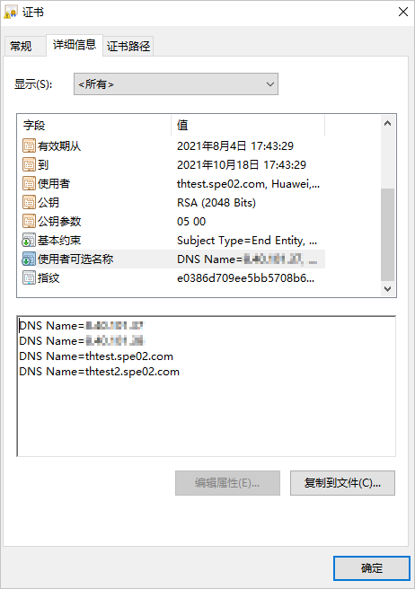

证书导入功能可以实现证书更新。
背景信息
客户端证书用于保证客户端和OceanProtect之间的通信安全性，服务端证书用于保证OceanProtect接受外部访问请求时的通信安全性。内部通信证书及内部数据库证书仅用于保证OceanProtect内部各组件之间的内部通信安全性。
注意事项
为保证使用多个控制器管理IP或域名访问系统时的安全性，请确保证书请求文件中包含多个控制器的域名或管理IP信息。从CA机构获取证书文件后，在Windows操作系统中，打开证书文件，在“详细信息”页签，查看“使用者可选名称”是否包含了多个控制器的域名或管理IP信息。如下所示，表示thtest.spe02.com和thtest2.spe02.com可被安全访问。此处thtest.spe02.com和thtest2.spe02.com为示例，仅供参考。

操作步骤
- 选择。
- 单击某个证书所在行右侧的“更多”。
- 客户端证书/服务端证书/内部通信证书/内部数据库证书
- 选择“导入证书”。
- 设置证书信息。
参数说明如表1。
表1 证书参数说明 参数
说明
备注
CA证书
单击
 ，选择需要导入的证书对应的CA证书文件。说明：
，选择需要导入的证书对应的CA证书文件。说明：- 导入的CA证书文件大小不能超过1MB。
- 导入的CA证书文件内容必须为x.509格式，且文件后缀必须为“.pem”。
- 如果CA证书文件不是根CA证书文件，请添加证书链文件。制作证书链文件的详细操作，请参见制作证书链文件。服务端证书和客户端证书最大支持3级CA。
- 内部通信证书/内部数据库证书仅支持1级CA。
适用的证书类型：
- 服务端证书
- 客户端证书
- 内部通信证书
- 内部数据库证书
服务端证书
单击
 ，选择需要导入的服务端证书文件。说明：
，选择需要导入的服务端证书文件。说明：- 导入的证书文件大小不能超过1MB。
- 导入的证书文件内容必须为x.509格式，且文件后缀必须为“.pem”。
- 服务端证书CN（Common Name）不能与CA证书CN相同。
检查方法：打开CER格式的服务端证书，查看“常规”页签中的“颁发给”（即服务端证书CN）的值与“颁发者”（即CA证书CN）的值是否不同。
- 客户端的服务端证书的CN（Common Name）必须是 “OceanProtect-AGENT”。
- 对于内部通信证书和内部数据库证书，服务端证书必须配置SAN（SubjectAltName），且SAN必须包含“DNS:*.dpa.svc.cluster.local”。
- 服务端证书使用二级CA证书时，服务端证书必须开启ClientAuth功能，否则将会影响证书双向认证功能，导致业务不可用。
适用的证书类型：
- 服务端证书
- 客户端证书
- 内部通信证书
- 内部数据库证书
服务端私钥
单击，选择需要导入的服务端证书文件对应的私钥文件。
如果服务端证书是通过从OceanProtect导出的请求文件在CA机构签发生成的证书，不需要配置该参数。
说明：- 私钥文件大小不能超过1MB。
- 私钥文件后缀必须为“.pem”。
- 私钥文件必须为加密私钥文件。如果您的私钥文件为明文私钥，请参见加密明文私钥文件进行操作。
适用的证书类型：
- 服务端证书
- 客户端证书
- 内部通信证书
- 内部数据库证书
服务端私钥密码
导入服务端私钥文件对应的密码。
如果服务端证书是通过从OceanProtect导出的请求文件在CA机构签发生成的证书，不需要填写该参数。
[取值范围]
长度范围为1~512位。
说明：对于内部通信证书，要求密码长度为8~64位，包含数字、大写字母、小写字母和特殊字符。
适用的证书类型：
- 服务端证书
- 客户端证书
- 内部通信证书

- 当证书类型为“服务端证书”及“客户端证书”时，导入证书后，系统会将CA证书推送到所有成员节点。
- 远程复制场景，替换源端或目标端的服务端证书后，需要使用同一CA证书签发的证书替换目标端或源端的服务端证书。如果不替换，将导致远程复制失败。
- 如果用户已安装客户端，再次更新服务端证书时，如果新的服务端证书和客户端证书不是同一CA证书签发，更新服务端证书后，需要参见替换客户端的SSL证书（非Windows OS）替换客户端证书。
- 仅支持导入签名算法为SHA256/SHA384/SHA512的证书。
- 勾选“危险”弹窗中的“我已阅读上述信息，了解执行此操作带来的后果。”后单击“确定”。
- 客户端证书/服务端证书/内部通信证书/内部数据库证书
- 单击“确定”。